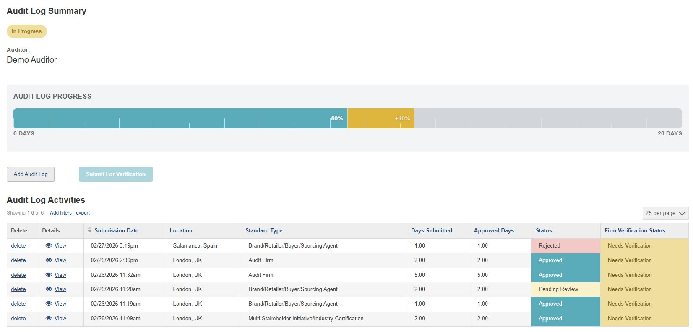

Audit Log Summary
The top section of your screen provides an at-a-glance overview of your entire audit log — including your portfolio status, progress toward the 20-day requirement, and key action buttons.
Portfolio Status
This badge shows the overall status of your audit log. It moves through stages as you progress: In Progress → Pending Firm Approval or Pending Admin Review → Pending External Approval → Approved.
Approved Days (Teal)
The teal portion of the bar represents audit days that have been approved by APSCA and confirmed toward your 20-day target. The percentage shown (e.g. 50%) reflects your confirmed progress.
Hover over the bar for a detailed breakdown
Pending Review Days (Gold)
The gold portion represents days from audits that are still pending review by APSCA. The "+%" figure shows how much these would add to your progress if approved. These are not yet confirmed toward your target.
Remaining Days (Grey)
The grey area represents the days still needed to reach the 20-day target. As you add more audits and they are approved, this section will shrink.
Add Audit Log
Click this button to record a new audit in your log. You'll be guided through selecting the program type, entering audit details, and submitting for APSCA review.
Submit For Verification
Once you reach 20 approved days, this button becomes active. Click it to submit your entire audit log to your firm for verification — or to nominate an external approver if you are not currently linked to a firm.
Requires 20 approved days
Audit Log Activities
This table lists every individual audit you've added to your log. Each row is one audit entry, showing its details, status, and verification progress.
Delete
Click to remove an audit entry from your log. You may want to delete an entry if it was submitted with incorrect details, as entries cannot be edited after submission.
Details
Click "View" to open the full details of an audit entry, including the program, standard, dates, and any other information you submitted.
Status
Shows whether APSCA has accepted each audit toward your log. Possible values are:
Rejected — Does not meet the requirements
Approved — Accepted toward your log
Pending Review — Awaiting APSCA review
Rejected — Does not meet the requirements
Approved — Accepted toward your log
Pending Review — Awaiting APSCA review
Firm Verification Status
Shows whether your firm or external approver has verified each audit:
Needs Verification — Not yet submitted for verification
Awaiting Verification — Submitted, waiting on reviewer
Verified — Confirmed by your firm/approver
Unable to Verify — Could not be confirmed
Needs Verification — Not yet submitted for verification
Awaiting Verification — Submitted, waiting on reviewer
Verified — Confirmed by your firm/approver
Unable to Verify — Could not be confirmed
Hover over pulsing dots for details
|
11 interactive areas to explore